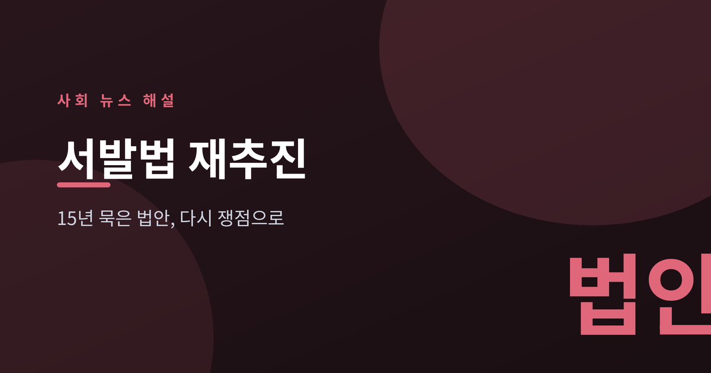
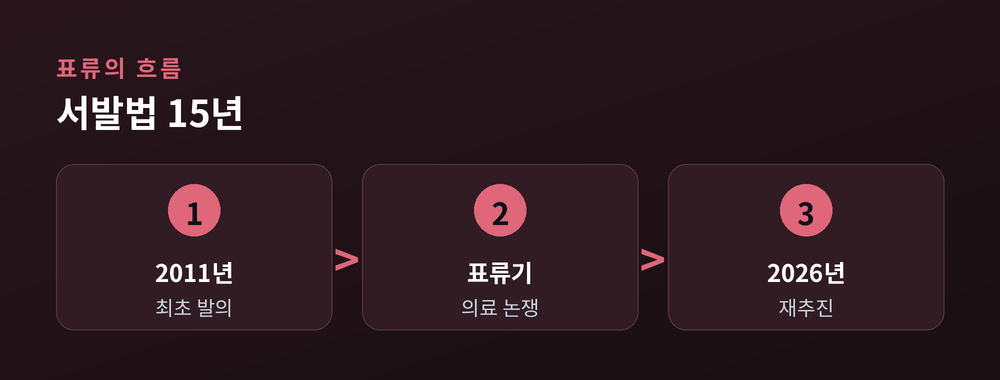
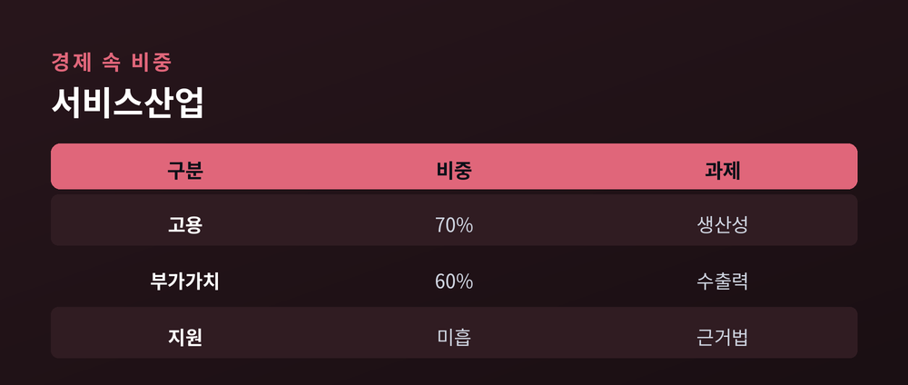
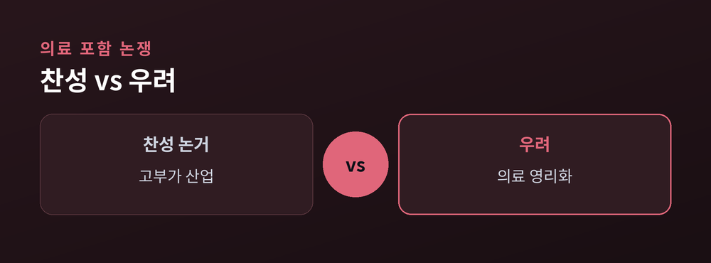

15년 묵은 법안이 다시 던진 쟁점

2026년 7월 6일, 구윤철 부총리 겸 재정경제부 장관이 서비스산업 경쟁력 강화 TF 2차 회의를 주재했습니다.
이 자리에서 정부는 서비스산업발전기본법(서발법) 제정이 시급하다고 강조했습니다.
구 부총리는 "이제는 서비스산업 발전을 위한 판을 새로 짜야 한다"고 말했습니다.
"산업 간 빗장을 열고 R&D·세제·금융 지원을 위한 서발법 제정이 시급하다." (2026.7.6 재정경제부 TF 회의)
이 법은 2011년 처음 발의된 뒤 15년째 국회에서 표류해 왔습니다.

서비스업은 우리 경제에서 비중이 매우 큽니다.
한국경제인협회에 따르면 서비스산업은 국내 고용의 70%, 부가가치의 60%를 담당합니다.
하지만 낮은 생산성과 약한 수출 경쟁력은 오랜 숙제로 남아 있습니다.
서발법은 R&D·세제·금융·인력양성을 체계적으로 지원할 근거 법률을 만드는 것이 핵심입니다.
콘텐츠, 관광, 의료, 뷰티 같은 고부가 분야를 국가 전략산업으로 키우자는 취지입니다.

법이 15년 표류한 핵심 이유는 보건·의료를 법에 포함할지를 둘러싼 대립입니다.
찬성 측은 의료를 관광·뷰티·플랫폼과 연결되는 고부가 산업으로 보고, 지원 근거가 필요하다고 봅니다.
우려 측은 영리 의료법인·원격의료 확대가 의료 영리화로 이어져 건강보험과 공공성을 흔들 수 있다고 봅니다.
그동안 의료법·약사법·건강보험법 등 이른바 의료 4법을 적용에서 제외하자는 절충안도 논의됐습니다.

정부는 이번에 컨트롤타워 구성과 단계적 추진에 무게를 두고 있습니다.
다만 의료 공공성 논쟁은 여전히 팽팽해, 국회 논의 과정이 순탄치만은 않을 전망입니다.
어느 편의 손을 들기보다, 성장과 공공성을 어떻게 함께 담을지가 관건입니다.
찬반 양측의 오랜 간극을 좁히는 절충안이 이번엔 마련될지 지켜볼 대목입니다.